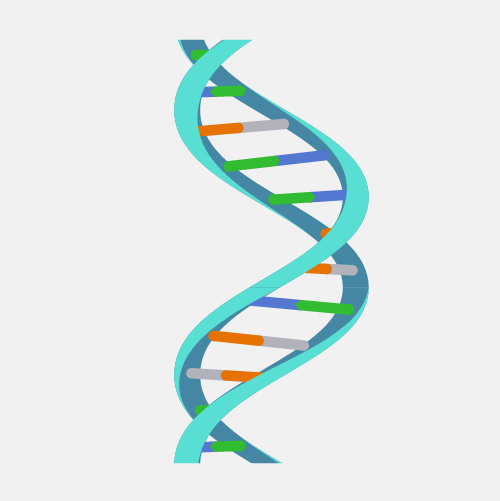
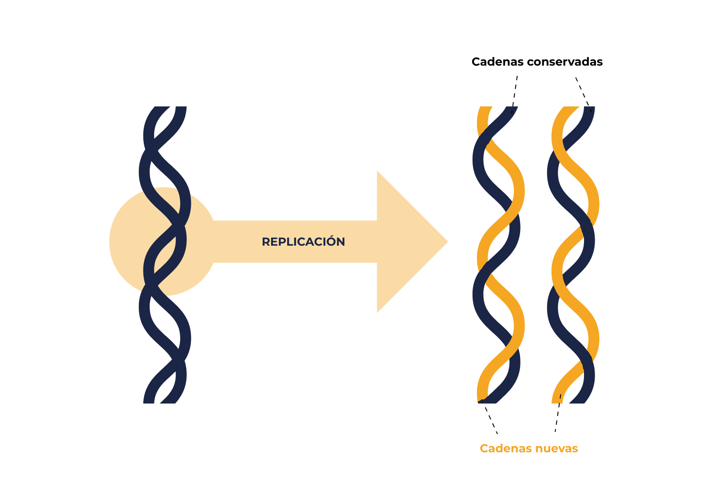
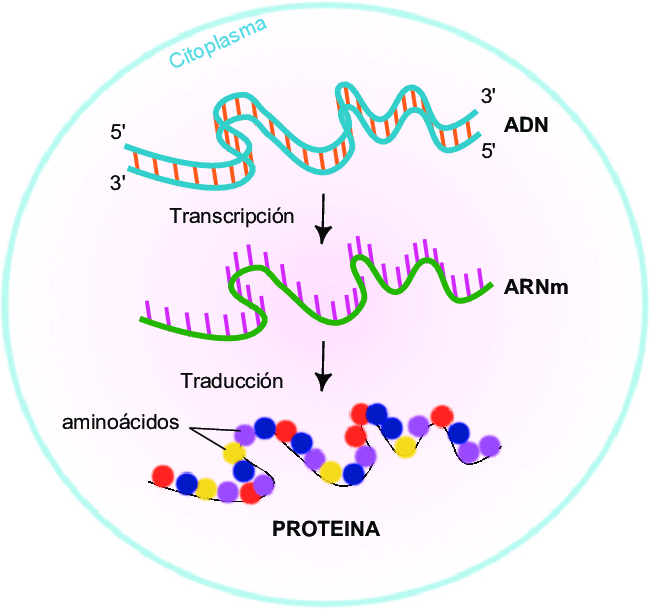

El ácido desoxirribonucleico (ADN) es la molécula que almacena la información genética de casi todos los seres vivos. Funciona como un "manual" que indica a las células cómo crecer, dividirse y funcionar.

Estructura básica
El ADN tiene forma de doble hélice, semejante a una escalera retorcida:
Puentes de hidrógeno: unen las bases de ambas hebras.
Componente
Descripción
Función
Azúcar (desoxirribosa)
Parte del esqueleto
Soporte estructural
Grupo fosfato
Alterna con el azúcar
Estabilidad y carga
Bases A–T
Emparejamiento específico
2 puentes de hidrógeno
Bases C–G
Emparejamiento específico
3 puentes de hidrógeno
Dato: El orden de las bases es lo que constituye la información genética.
Genes, cromosomas y genoma
Un gen es un segmento de ADN que produce una molécula funcional. Estos se organizan en cromosomas. En humanos hay 46 (23 pares). El genoma es el conjunto total de ADN.
Localización: mayormente en el núcleo.
Variación genética: explica rasgos como color de ojos o predisposición a enfermedades.
¿Cómo se copia el ADN? (Replicación)
Antes de que una célula se divida, debe copiar su ADN:
Helicasa: separa hebras.
ADN polimerasa: agrega nucleótidos y corrige errores.
Resultado: dos moléculas idénticas (replicación semiconservativa).

Del ADN a la proteína
Dogma central
La información fluye del ADN al ARN y luego a proteínas:
Transcripción: ADN → ARNm.
Traducción: ARNm → proteína.
Código genético: cada codón (3 bases) = 1 aminoácido.

Mutaciones y salud
Una mutación es un cambio en la secuencia del ADN. Pueden ser neutras, beneficiosas o dañinas:
Tipos: sustituciones, inserciones, deleciones.
Causas: errores, radiación, químicos.
Ejemplos: anemia falciforme, fibrosis quística.
Tecnologías basadas en ADN
PCR: copia fragmentos de ADN.
Secuenciación: lee el orden de bases.
CRISPR: edición genética precisa.
Huella genética: identificación individual.
Cuidados, bioseguridad y ética
Privacidad: proteger datos genéticos.
Bioseguridad: usar técnicas adecuadas.
Ética: considerar el impacto de la edición genética.